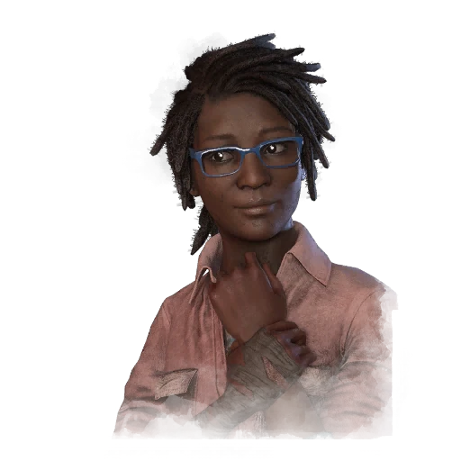

CELEBRATING 60M PLAYERS
Welcome to the deadly game of hide and seek
Welcome to the deadly game of hide and seek
DEAD BY DAYLIGHT’S 2V8 MODE
This means a few changes to Maps and several key systems, including the way Survivors are Hooked and Sacrificed. Given the frantic nature of 2v8, we found that downing and placing Survivors on Hooks was slowing down the pace a little too much. To allow Killers to dive back into the action quicker, downed Survivors can immediately be sent to a Cage, teleporting to a random location across the Map.
Dwight
Claudette
Meg Thomas
DEAD BY DAYLIGHT’S ANNIVERSARY

Fri 27 Nov 2022
The 6th Anniversary stream for Dead by Daylight has revealed plenty of new information for fans of the long-term asymmetrical horror franchise to get excited about, both in and out of the game.
View details
Fri 27 Nov 2023
The 7th Anniversary stream for Dead by Daylight has revealed plenty of new information for fans of the long-term asymmetrical horror franchise to get excited about, both in and out of the game.
View details
Fri 27 Nov 2024
The 8th Anniversary stream for Dead by Daylight has revealed plenty of new information for fans of the long-term asymmetrical horror franchise to get excited about, both in and out of the game.
View detailsDEAD BY DAYLIGHT’S 2V8 MODE